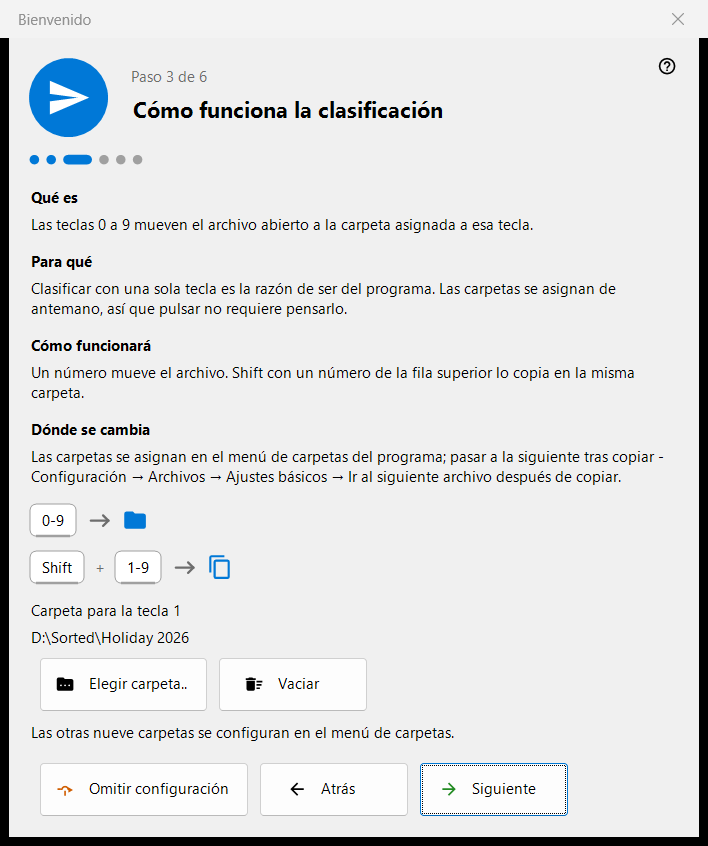
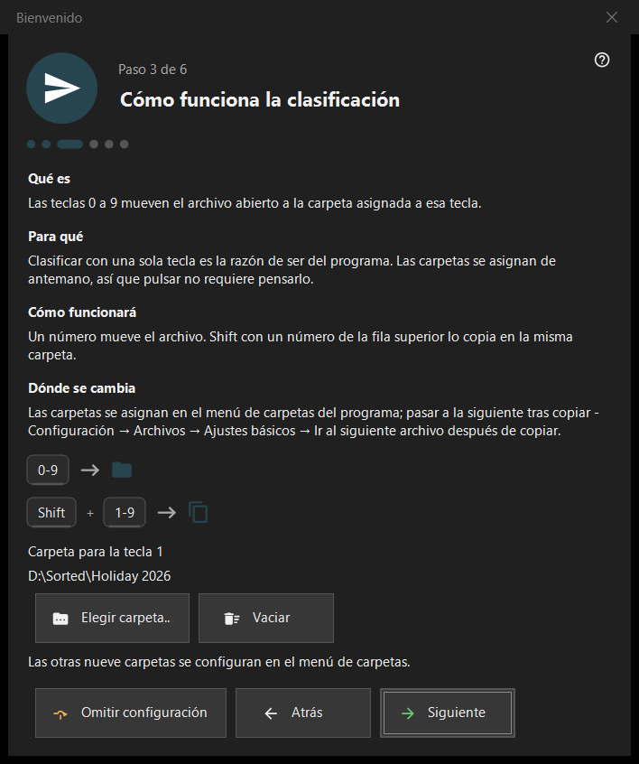

Bienvenido
Bienvenido
Para qué sirve
Los pasos de bienvenida configuran lo básico en pocos minutos: idioma, apariencia, la carpeta para la tecla 1, la eliminación y las asociaciones de archivos. Se abren en el primer inicio, con el botón «Configuración inicial» de la pantalla vacía del visor y con «Mostrar otra vez los pasos de bienvenida» en la página «General» de la Configuración. Solo existen en la versión de 64 bits.


En este orden
- Elija el idioma.
- Elija el esquema de fondo y la acción de la rueda.
- Elija la carpeta para la tecla 1.
- Lea cómo funciona la eliminación.
- Defina las asociaciones de archivos.
- Revise el resumen y pulse «Finalizar». «Siguiente» avanza, «Atrás» vuelve y «Omitir configuración» salta al último paso.
Los elementos
Idioma de la interfaz
La ventana cambia de idioma al instante como vista previa; el visor solo lo adopta con «Siguiente». Si se cierra la ventana sin pulsarlo, se restablece el idioma del visor.
Apariencia
Elija el esquema de fondo del área de la imagen (Por esquina, Negro, Blanco, Por borde, Por arriba, Por abajo) y la acción de la rueda: o bien hace zoom en el cursor y las flechas recorren los archivos, o bien recorre los archivos y Ctrl+rueda hace zoom. Ambas opciones se pueden cambiar después en la página «Imágenes» de la Configuración.
Cómo funciona la clasificación
Los dígitos 0-9 mueven el archivo actual a una carpeta; Shift más un dígito de la fila superior lo copia. La carpeta para la tecla 1 se elige con «Elegir carpeta..»; las otras nueve se asignan después en la página «Destinos» de la Configuración. Si una carpeta ha desaparecido, el paso avisa: «La carpeta ya no está disponible. Elija otra.»
Eliminación segura
Muestra cómo funcionan Del (a la Papelera) y Shift+Del (definitiva). Las opciones de eliminación están en la página «Archivos» de la Configuración.
Abrir las imágenes aquí
Permite que este programa abra imágenes y vídeos desde el Explorador. El paso aparece solo cuando el programa no está instalado como paquete de Microsoft Store; se aplica a su cuenta de usuario y no requiere derechos de administrador.
Todo listo
El resumen enumera cada ajuste, su valor y dónde cambiarlo. Si en este PC hay componentes de servidor instalados, el bloque «Servidores en este PC» muestra cada uno con su estado y el botón «Abrir el administrador»; si no hay ninguno instalado, el bloque se oculta.
Partes de un paso
Cada paso tiene cuatro partes: «Qué es», «Para qué», «Cómo funcionará» y «Dónde se cambia».